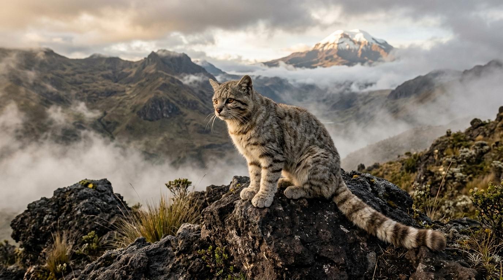
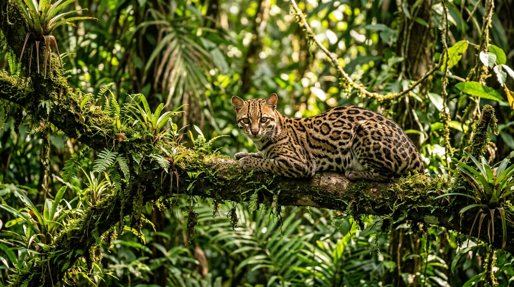
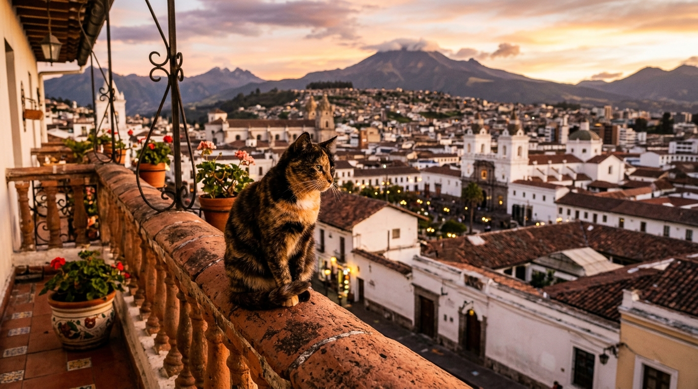

EndangeredAndean Mountain Cat
Leopardus jacobitaOne of the rarest and least understood small cats on Earth. It inhabits the cold, rocky paramos and dry puna above 3,500m elevation, preying on mountain viscachas.
From the sacred heights of the snow-capped Andes to the untamed depths of the Yasuní rainforest and Quito's historic tiled rooftops, explore Ecuador’s most magnificent feline inhabitants.
A crossroad between Pacific coastal dry forests, paramo volcanic peaks, and the Amazon Basin makes Ecuador home to extraordinary feline predators.

EndangeredOne of the rarest and least understood small cats on Earth. It inhabits the cold, rocky paramos and dry puna above 3,500m elevation, preying on mountain viscachas.

Least ConcernKnown locally as tigrillo, this nocturnal predator is famous for its intricate rosettes and nocturnal stalking prowess through the dense Amazon Basin and Chocó rainforest.
The true acrobat of Ecuadorian trees. Unlike any other cat, the Margay can rotate its hind ankles 180 degrees, enabling it to scamper head-first down tree trunks like a squirrel.
Click through Ecuador's geographical regions to see which feline species claim each territory.
Surrounding volcanos like Cotopaxi and Chimborazo, freezing winds and low oxygen create an extreme ecological niche.
The world’s most biodiverse primary rainforest provides an abundant prey base for both apex feline hunters and stealthy canopies dwellers.
Draped in perpetual mist, epiphytes, and mosses on the western Andean slopes, this moist paradise supports remarkable tree-climbing cats.
Ecuador’s famous Galápagos Archipelago has no native feline species. Domestic cats brought by historic sailors and settlers became feral predators, posing a severe threat to endemic marine iguanas, lava lizards, and Galápagos finches.
Today, the Galápagos National Park Directorate enforces strict biosecurity, mandatory sterilization, microchipping, and protective curfews to preserve the islands' unique prehistoric wildlife.

Domestic cats (Felis catus) play a beloved part in Ecuadorian urban life. From the historic colonial streets of Old Town Quito (San Marcos and La Ronda) to the river walks of Guayaquil and the cobbled alleys of Cuenca, cats bask in Andean sunshine atop warm terracotta roof tiles.
Ecuador's Organic Environmental Code (CODA) penalizes cruelty and promotes trap-neuter-return (TNR) initiatives.
Non-profits like Protección Animal Ecuador (PAE) and Acción Animal Ecuador work tirelessly across Quito, Cuenca, and Guayaquil finding loving homes for rescued kittens.
Modern urban spots in Quito and Guayaquil combine artisanal Ecuadorian specialty coffee with ethical cat adoption lounges.